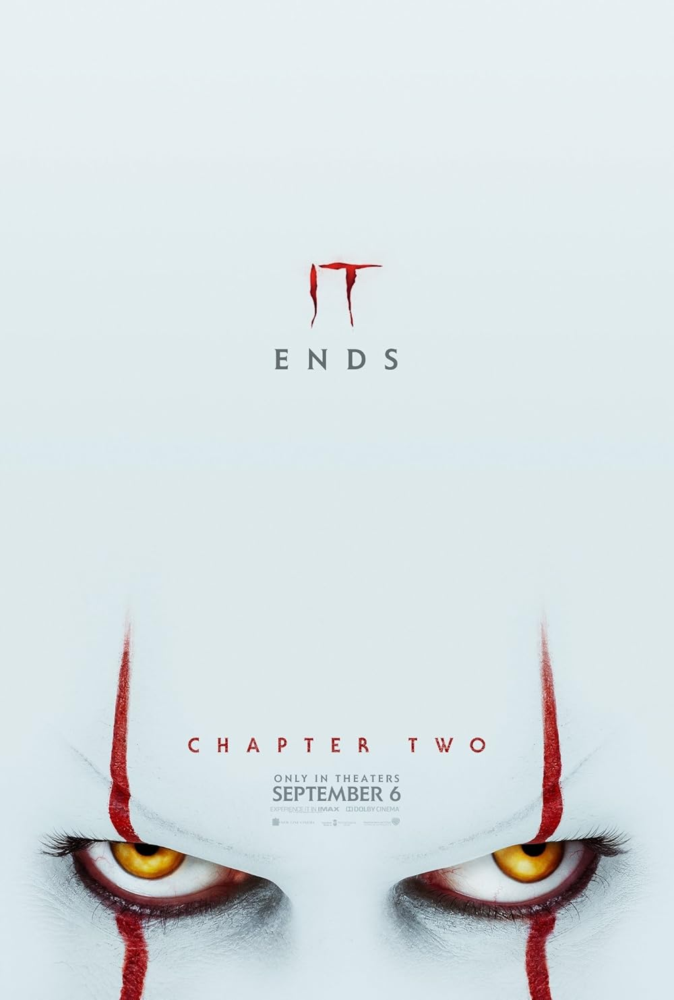

My Art & Media
My creative side and films that I view as my favourites.
🎨 traditional Drawings
These are some of my most recent art works.
Favorite Films & Reviews
It Chapter One (2017)

Review: This adaptation of Stephen King's classic is a really good piece horror media and also the classic coming of age storytelling. The performances by the young cast is also super good, making the fear and friendship feel more real instead of fake like it is in movies such as the conjuring. Pennywise is terrifying, and the practical effects are especially unsettling.
It Chapter Two (2019)
Review: While Chapter Two didn't live up to the hype for me, it delivered a satisfying conclusion to the Losers Club, and the horror sequences in my opinion are really creative. It's a slightly different tone, more like surreal horror, but it's a good follow up that explores alot of trauma.